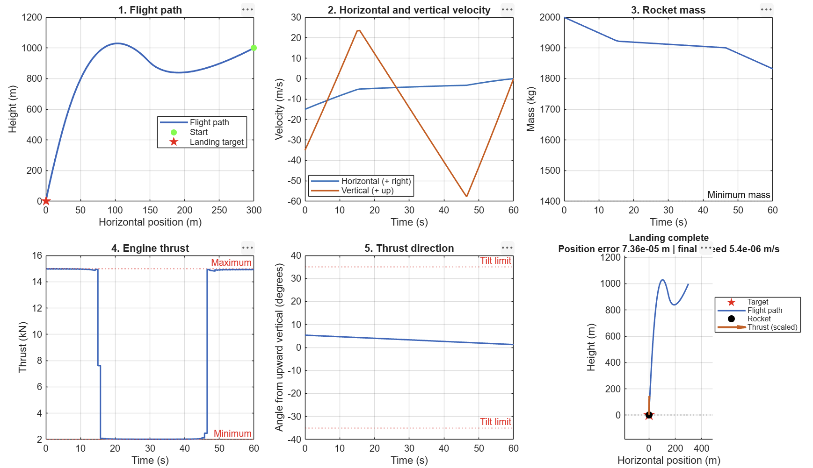
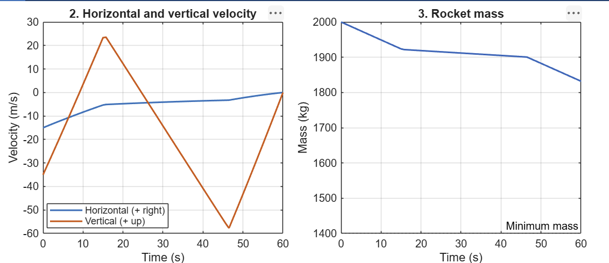
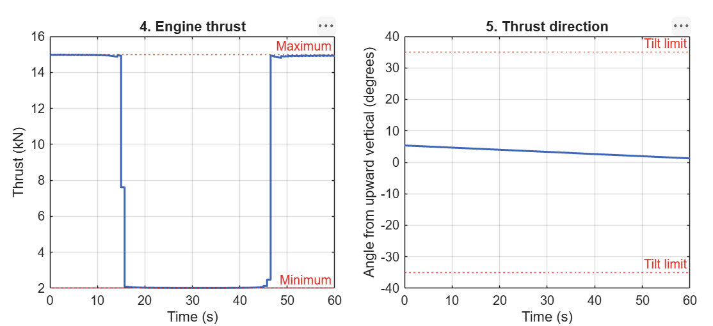

Personal project · Simulation
Powered-descent guidance
I wanted to know how little fuel a simulated vehicle could use to reach a landing site and come to a stop. Tilting the engine helps correct a sideways error, but it also leaves less thrust available to slow the fall. I built a 2D solver to work out when to make that trade.
- When
- June–September 2026
- Tools
- Python · CVXPY · MATLAB

The problem
As fuel burns, the vehicle gets lighter. The same thrust produces more acceleration near touchdown than it does at the start. I included that changing mass when calculating how much thrust the vehicle needed at each step.
My approach
I formulated a conservative second-order cone program using thrust acceleration and logarithmic mass. The model includes thrust bounds, a 35° tilt limit, a glide corridor and minimum remaining mass.
Simulation results
Scroll through the images or use the controls.



Independent validation
I replayed the engine commands in separate Python and MATLAB simulations, then compared motion and fuel consumption with the optimizer’s prediction. A passing run must finish within 5 cm of the target, below 0.005 m/s, with a mass difference below 10 g.
The 60-second example used approximately 168 kg of modeled propellant. A 27-second case used approximately 90 kg and passed the checks; a 26-second case did not. Those results apply to the durations I tested.
Original MATLAB recording of the 60-second example, shown at 4× playback speed.
Model limits
The simulation uses illustrative vehicle parameters under Mars-like gravity. It excludes wind, aerodynamic drag, vehicle rotation and closed-loop corrections. The replay measures how closely two implementations of the model agree.
View the source codeDeveloped with AI assistance and established numerical libraries. Code organization was inspired by Niko Natsoulas’s LCVX PDG project. This is a personal project, with no SpaceX affiliation.